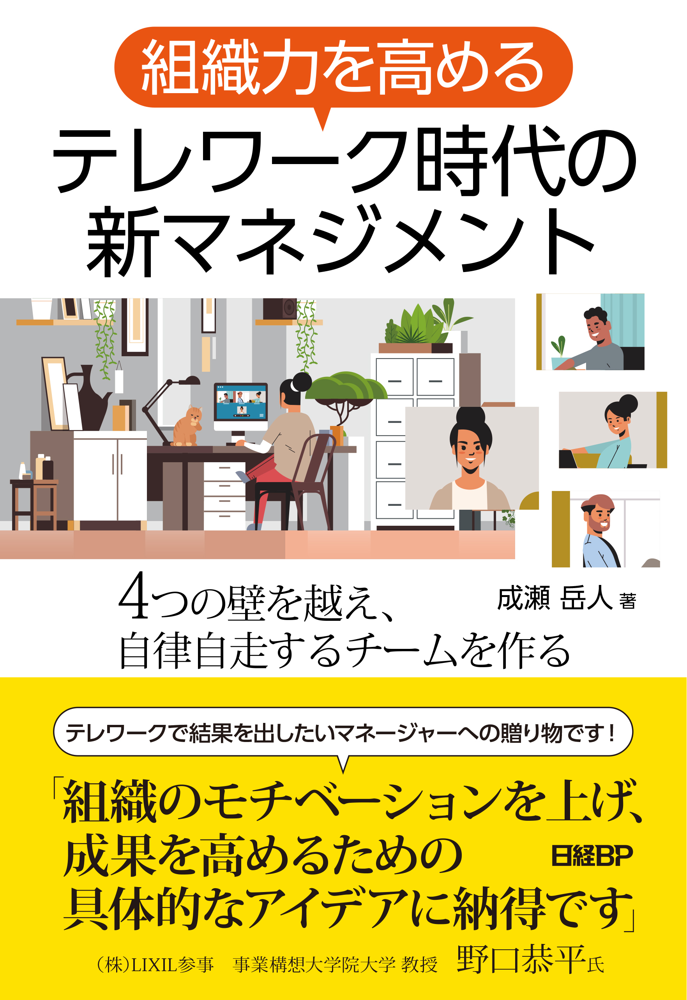

テレワーク時代の新マネジメント診断
「テレワーク時のマネジメントどうしたらいいの？」という方のための簡易診断です。
診断結果を見て、より詳しく知りたい方は、書籍『組織力を高める テレワーク時代の新マネジメント』（日経BP）
を読んでみましょう！
購入サイトへ

【著者プロフィール】
成瀬 岳人
パーソルプロセス＆テクノロジー株式会社 ワークスイッチ事業部 事業開発統括部 部長
（事業構想士／総務省テレワークマネージャー）
2012年より業務コンサルタントとして多数の企業の業務改善、新規プロジェクト立ち上げに従事。
2015年より、公共事業や複数企業の働き方改革企プロジェクトの企画・プロジェクトマネジメントを担当。
2020年4月より現職。副業で総務省テレワークマネージャーとして全国のテレワーク導入課題を持つ企業の支援を行う。
診断結果はコチラ！
本の購入はコチラ